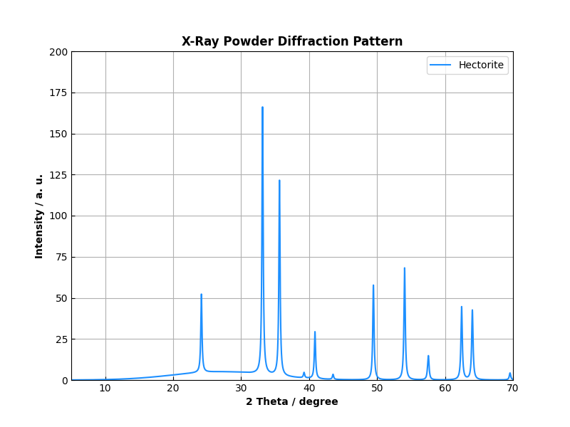

XrdQty | Phase Analysis using 1D-Convolutional Neural Networks
XrdQty is an end-to-end machine learning pipeline designed to perform quantitative regression on X-ray diffraction (XRD) signals. The project addresses the challenge of estimating mineral phase fractions in complex mixtures by replacing traditional iterative fitting methods with a deep learning approach.

Synthetic Data Engineering:
To overcome the scarcity of labeled experimental data, I implemented a synthetic data generation engine. The module processes raw structural data from the RRUFF Database, extracting peak locations and intensities. By applying random perturbations and weighted combinations of individual phase contributions — and injecting realistic background noise — the pipeline generates a massive, diverse dataset of multi-phase patterns. This allows the model to generalize across a vast space of possible compositions and experimental conditions.
Model Architecture & Training:
The core is a 1D-Convolutional Neural Network (1D-CNN) optimized for signal processing. The architecture is designed to capture hierarchical features of the XRD signal:
Convolutional Layers: Act as automated feature extractors that detect local peak shapes and relative intensities.
Max-Pooling: Reduces dimensionality while maintaining translation invariance, ensuring robustness against slight peak shifts and noise.
Regression Head: Fully connected layers map the high-level feature vector to a continuous output vector representing the fractions of each mineral phase. The model is trained using Mean Squared Error (MSE) loss to minimize the discrepancy between predicted and true fractions, with performance evaluated via Mean Absolute Error (MAE).
GitHub: github.com/markus-schindler/XrdQty